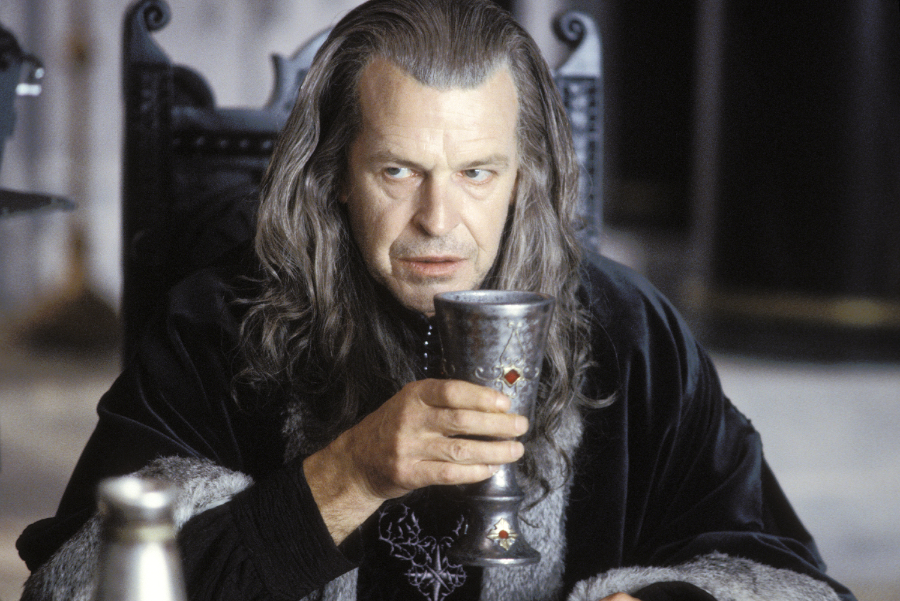
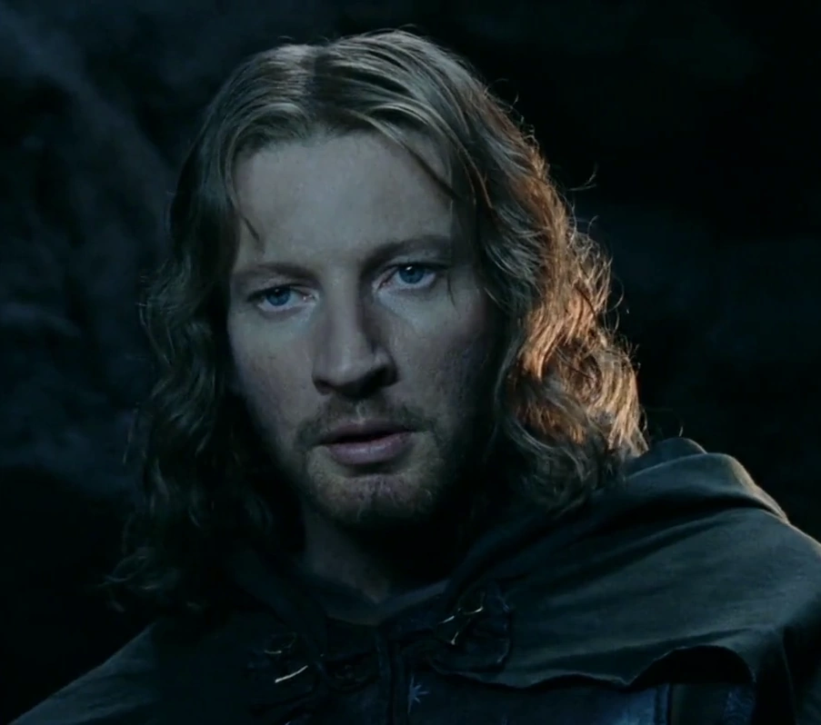

Aragorn
Aragorn (Valor de rey en sindarin), también conocido como Trancos, fue un dúnedain y el trigésimo noveno
heredero de
Isildur en línea directa. Al finalizar la guerra del anillo, se casó con Arwen y tuvo un hijo, llamado
Eldarion a partir de alli retomo
la corona del reino como heredero legitimo hasta su muerte en el año 120 de la cuarta edad.

Denethor II
Denethor II (Tercera Edad 2886 - 2984, 98 años de edad) fue el vigésimo sexto y último Senescal Regente de
Gondor. Sucedió a su padre Ecthelion tras su muerte en el año 2984. Denethor era un hombre de aire más
señorial que ninguno de sus antepasados senescales. Escuchaba consejos y luego hacía lo que le parecía. Murio
durante la batalla de los campos de Pelennor en su locura al tratar de cremar a su hijo Faramir mientras este aun estaba con vida.

Faramir
Era el hijo menor del Senescal de Gondor durante la Guerra del Anillo, Denethor II. Estaba obsesionado por parecerse
a Boromir , ya que su padre prefería a su hermano antes que a él, y esto le llevó a cometer un acto suicida, que
consistió en intentar recuperar Osgiliath, que estaba en manos del ejército orco procedente de Minas Morgul, con no más
de 100 hombres, afortunadamente pudo sobrevivir y fue rescatado de ser cremado por su padre por Gandalf el blanco.
